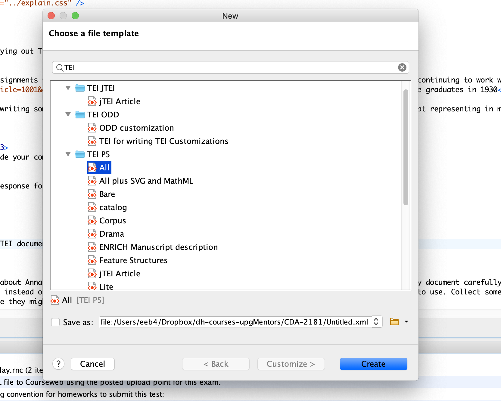

This is the second of a series of assignments to introduce you to the XML-based language of the Text Encoding Initiative (TEI). We are continuing to work with Anna Julia Cooper’s handwritten response to a survey of black college graduates in 1930.
With this exercise, experiment with writing some TEI code in oXygen to represent any one portion of the survey that you choose to attempt representing in markup.
It may help you to find a way to divide your computer screen or to look at two screens. You need to be working with three resources:
Open the oXygen XML Editor to a new TEI document by selecting TEI P5 and All in the new file selection. To begin, open a new TEI file in <oXygen/> by clicking on the top left icon that looks like a corner-folded piece of paper (or going to File → New) and typing TEI in the search box. In the results, look for the TEI P5 options and choose the first one: All. This opens a file with a simple starter template and the TEI-All schema lines that we want for now as we begin coding. Here is a screen capture to show how to open a TEI-All file in <oXygen/>:
Look at the TEI file you opened and notice its characteristic two-part structure, with the teiHeader and text elements that are the children of the root element TEI. For this assignment we will be working in the <text> portion of the document.
For this exercise, begin by reading about Anna Julia Cooper to learn who she was, and to learn about this survey. Then, study the survey document carefully and take notes on what you would like to do to organize the survey questions and answers. Next, instead of writing your own markup, turn to the TEI Guidelines to research what markup strategies to use. Collect some sections of the Guidelines to apply, together with elements and attributes that seem like they might work for your purposes. Start here:
My Racial Philosophyand how she drafted in response to this survey.
Now, begin researching the TEI Guidelines to find relevant sections for coding the survey. Specifically, take notes on what markup from the TEI you think would be helpful from the following resources in the Guidelines:
TEI projects are best begun with a round of debate and discussion and comparing notes, so in that spirit, complete this first TEI exercise by writing a post on our textEncoding-Hub Issue for this assignment. In the post, describe what you think is important to mark in the survey, and link to passages in the TEI Guidelines defining elements and attributes that we should use in this project. You may comment on how you would want to approach the markup of the survey and the handwriting whether or not you find good matches for what you wish to do in the TEI Guidelines. Raise questions and respond to each other about passages in the Guidelines that you are not certain about but seem relevant to our task.